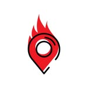
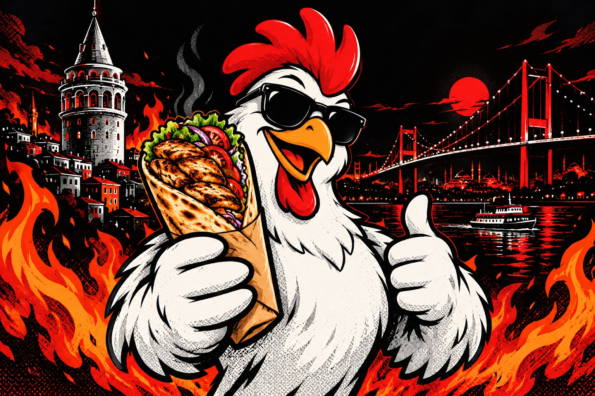

يوسف باشا · الفاتح · إسطنبولنكهة سورية.
نكهة سورية.
على مزاجك.
شاورما، كرسبي، ووجبات على ذوقك.
اختار لقمتك، وإحنا نكمّل الباقي.
استمتع بالطعم
بنجهّز لك المنيو…
شاورما، كرسبي، ووجبات على ذوقك.
اختار لقمتك، وإحنا نكمّل الباقي.
محتار تبدأ بإيه؟ دي اختيارات المحل الأكثر مبيعًا.
اسحب لاكتشاف الوجبات ←

اختار وجبتك، ضيف عنوانك، وكمّل معانا على واتساب.